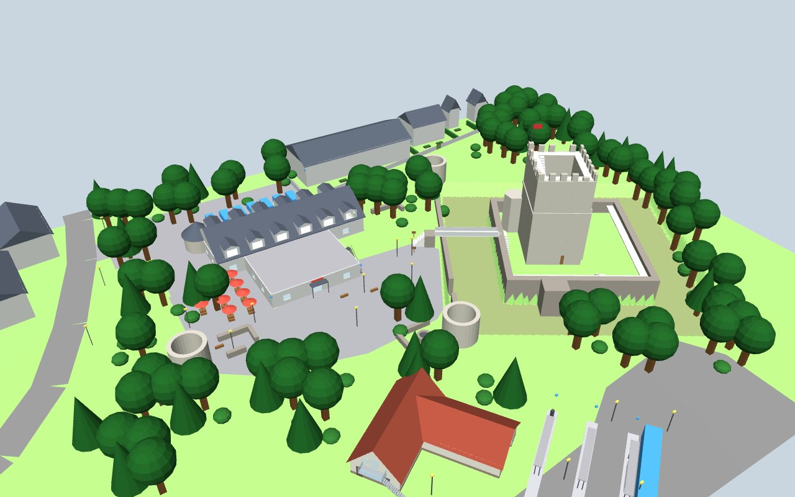
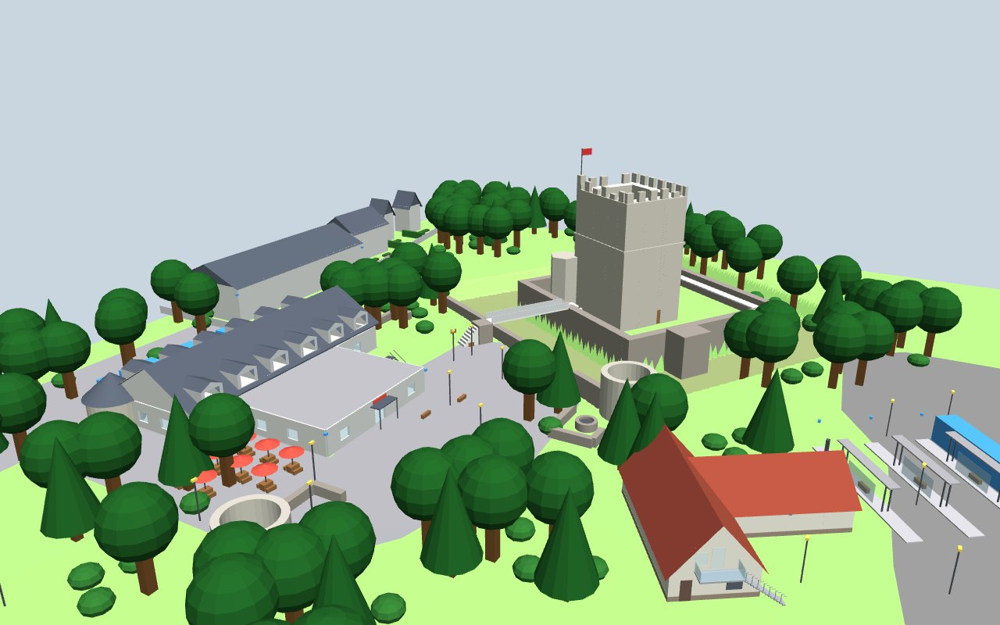
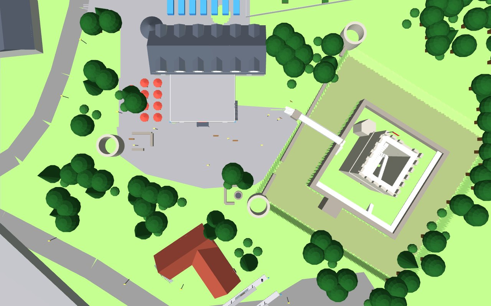

Die komplette Actual-Play-Kampagne "Blackrock" von Tiny Tactic Tales: die Folgen, Shorts, Charaktervorstellungen — und die frühen Fantasy-Wurzeln der Runde.
Shadowrun 2036 ist eine Cyberpunk-Pen-&-Paper-Runde, verlegt ins Ruhrgebiet der nahen Zukunft — zwischen Essen, Kettwig und Oberhausen. Eine Gruppe Schattenläufer gerät nach einem mysteriösen Mordfall am Baldeneysee zwischen die Fronten von Konzernen wie Saeder-Krupp, Magie und Matrix. Gespielt wird live am PC, aufgezeichnet und als Actual Play auf YouTube veröffentlicht — hier stehen alle Folgen, Shorts und Hintergrundvideos chronologisch sortiert.
3D-Karte zum Ausprobieren: Für den SR-3D-Player gibt es eine Beispielkarte, die Burg Altendorf in Essen-Burgaltendorf. Du kannst sie hier herunterladen (Burgaltendorf.glb, 6 MB), im Player über "Karte laden" öffnen und die Blickwinkel und Knöpfe testen. Die Datei bleibt auf Deinem Gerät, nichts wird hochgeladen. Mehr dazu in der Beschreibung auf GitHub.
Battle-Maps
3D-Karten für den SR-3D-Player. Der Player lädt Karten nur aus einer Datei auf Deinem Gerät: Datei herunterladen, dann im SR-3D-Player über "Karte laden" öffnen oder ins Fenster ziehen.



Burg Altendorf
Essen-Altendorf
Burg Altendorf mit Café und Busbahnhof, Spielort in Shadowrun 2036: Blackrock. Entwurf, 3D-Karte für den SR-3D-Player.
Großdolmen von Dwasieden, nachgebaut nach den Maßen der Wikipedia (Hünenbett 35 m, Kammer 4,0 x 1,7 m). Gelände, Bäume und die Lage einzelner Steine sind geschätzt. Entwurf für den SR-3D-Player.
Maßangaben: Wikipedia, Großdolmen von Dwasieden (Sprockhoff 472).
Figurenvorstellungen, Trailer und Charakterbogen abseits der nummerierten Folgen.
Fantasy-Clips
Bevor "Blackrock" zu Shadowrun 2036 wurde: frühe Clips aus der Fantasy-Vorgeschichte der Kampagne.
Alle Folgen, Livestreams und mehr gibt's auf dem Kanal Tiny Tactic Tales auf YouTube. Austausch und mehr Infos gibt's zusätzlich auf unserem Discord-Server.
 Gratis Battlemap & 3D-Player Burgaltendorf für Shadowrun & Rollenspiel
Burgaltendorf.glb laden (6 MB)SR-3D-Player öffnen
Gratis Battlemap & 3D-Player Burgaltendorf für Shadowrun & Rollenspiel
Burgaltendorf.glb laden (6 MB)SR-3D-Player öffnen
 Dwasieden auf Rügen: 3D-Map vom Großsteingrab
Dwasieden.glb laden (6 MB)SR-3D-Player öffnen
Dwasieden auf Rügen: 3D-Map vom Großsteingrab
Dwasieden.glb laden (6 MB)SR-3D-Player öffnen